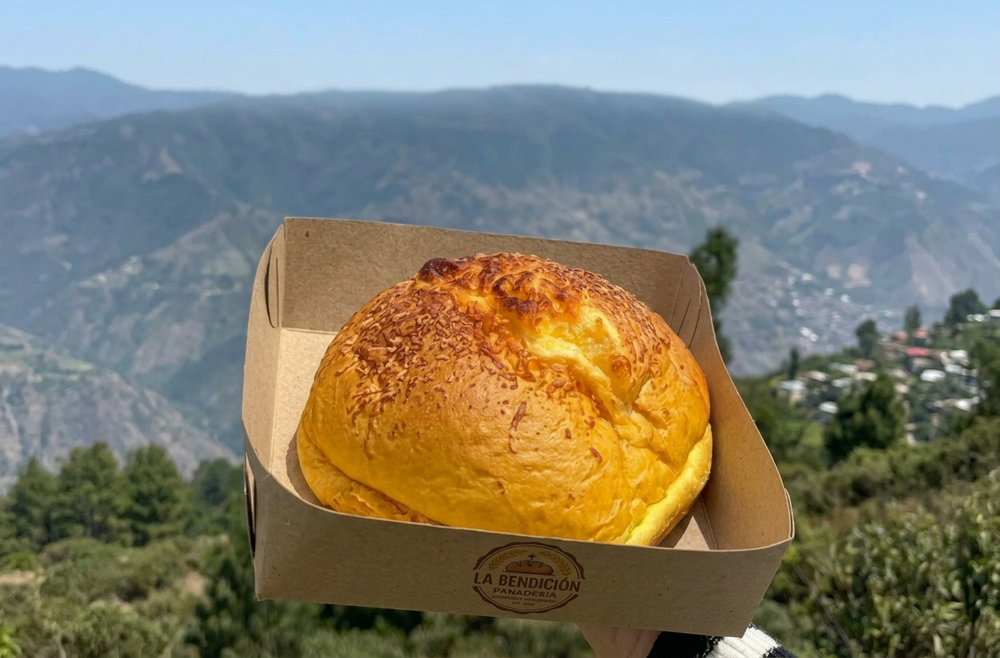
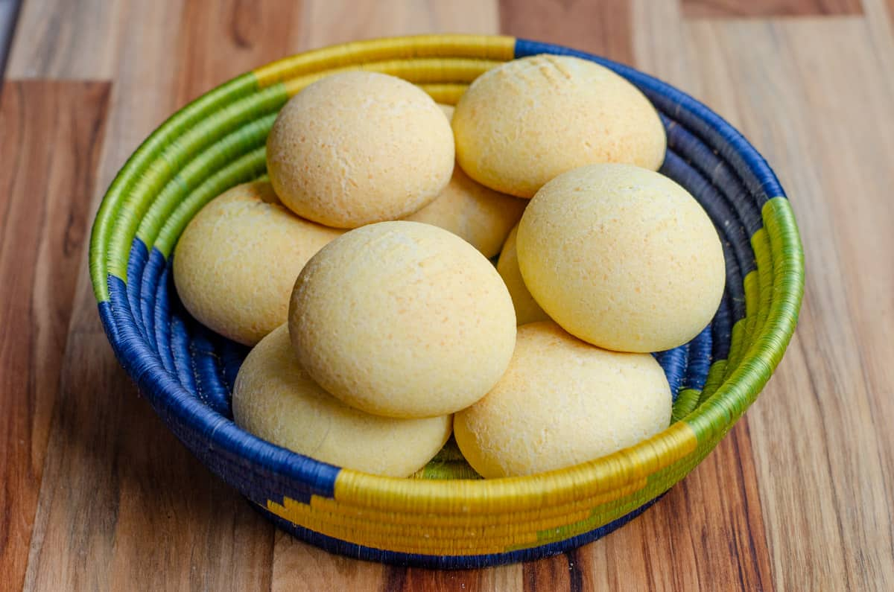
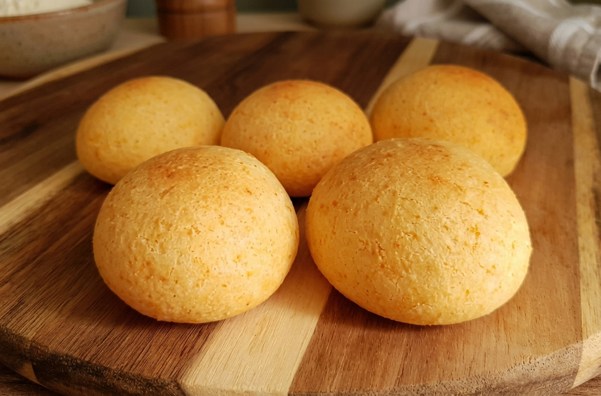

¿Quiénes somos?
Más que una panadería, somos un lugar creado para llenarte de recuerdos, experiencias y momentos de felicidad. Nos especializamos en la elaboración de panadería artesanal, tortas y repostería, cuidando cada detalle de nuestras recetas tradicionales.
Queremos que cada visita a nuestras instalaciones o cada pedido a domicilio sea una experiencia óptima, segura y deliciosa. Nuestro objetivo es dejar una huella imborrable en el paladar y en el corazón de nuestros clientes.
Productos y servicios

Pan chocha
Pan artesanal de gran tamaño, completamente relleno de 3 diferentes tipos de queso: Cuajada, queso costeño y queso mozzarella, perfecta alternativa a los panes tradicionales.

Pan de Bono
Pan tradicional Colombiano, originario del Valle del Cauca, sus principales ingredientes para su sabor es la fécula de maíz, almidón de yuca, huevo y queso costeño.

Almojábana
Pan originario de la Región Andina, elaborado con queso campesino y harina de maíz, tiene una textura suave por dentro y ligeramente crocante por fuera.
Beneficios de comprarnos
- Mejores precios del mercado: Fabricamos nuestra materia prima para después transformarla en el producto final, esto nos ayuda a reducir los costos.
- Productos siempre frescos: Al ser fabricantes de nuestra materia prima, siempre nuestros productos serán frescos y de excelente calidad.
- Atención personalizada: Nos adaptamos a tus necesidades y tenemos la flexibilidad de hacer el pan que desees aunque no esté en el catálogo.
- Preparación artesanal: Cuidamos cada etapa de la elaboración, cada detalle y tenemos una fuerte base en recetas tradicionales.
- Facilidad de compra y servicio: Tenemos múltiples canales de atención, desde virtuales (WhatsApp, llamadas, redes sociales) hasta atención presencial en nuestro local.
Encuéntranos
Dirección: Calle 123 #56-27, El Poblado.
Correo electrónico: panaderialabendicion@gmail.com
¿Tienes alguna duda?
Escríbenos al
WhatsApp
para pedidos y consultas.